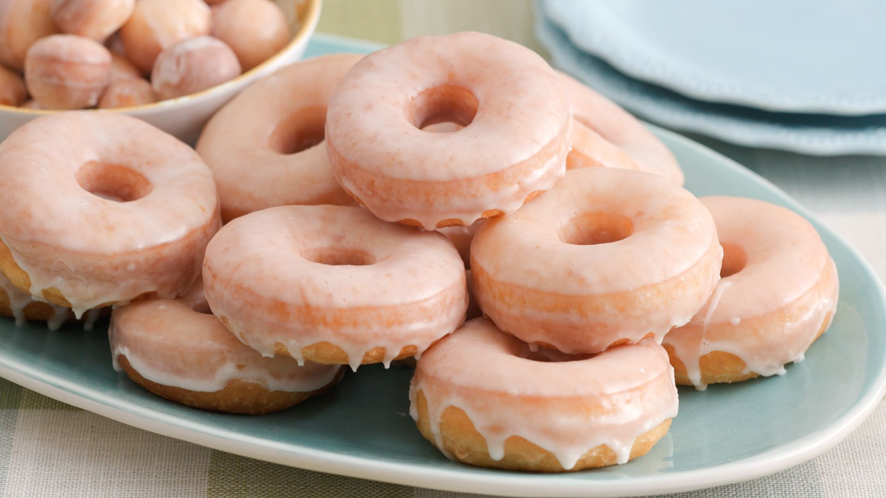

Donut

Description
A doughnut or donut is a type of food made from leavened fried dough. It
is popular in many countries and is prepared in various forms as a sweet
snack that can be homemade or purchased in bakeries, supermarkets, food
stalls, and franchised specialty vendors.
Ingredients
- Milk
- Yeast
- Sugar
- Eggs
- Butter
- Salt & Vanilla Extract
- Nutmeg
- Flour
Steps
First the dough
-
Prepare the dough. The dough comes together with a
mixer. You can also make the dough by hand, but it requires a bit of arm
muscle. After the dough comes together in the mixing bowl, knead it for
5-7 minutes.
-
Roll & cut into doughnuts. Roll the dough out to
1/2-inch thickness. Cut the doughnuts using a 3-3.5-inch doughnut
cutter. Line 1 or 2 baking sheets with parchment paper or a silicone
baking mat. Place doughnuts (and doughnut holes!) onto the lined baking
sheet(s), then lightly cover and allow to rest for 30 minutes as you
heat the oil.
-
Prepare the oil. Using a heavy-bottomed pot or Dutch
oven and an oil thermometer, heat vegetable oil to 375°F (191°C).
-
Fry the doughnuts.Working with 2-3 doughnuts at a time,
cook for 1 minute on each side. Carefully remove from the oil and place
onto prepared rack. Repeat with remaining doughnuts. (See my recipe note
about making the doughnut holes.)Working with 2-3 doughnuts at a time,
cook for 1 minute on each side. Carefully remove from the oil and place
onto prepared rack. Repeat with remaining doughnuts. (See my recipe note
about making the doughnut holes.)
Now the glaze
Make a simple 3-ingredient glaze: just milk or cream, confectioners'
sugar, and vanilla extract. This part couldn't be easier; literally just
whisk the 3 ingredients together. Dunk each side of the warm doughnuts
into the glaze. The glaze will set in about 20 minutes.